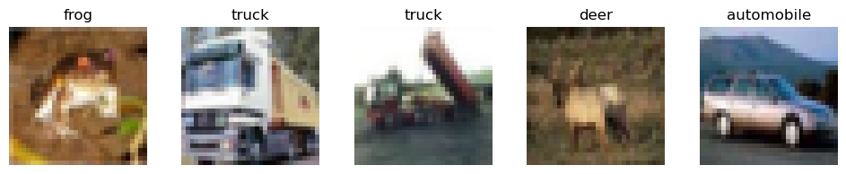
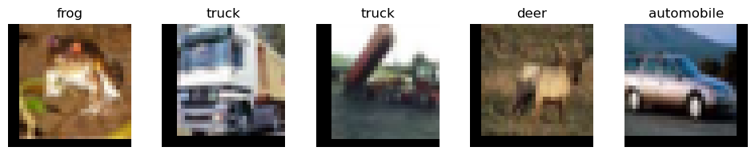

x# 1def sum_list_numbers(lst): total = 0 for number in lst: if isinstance(number, (int, float)): total += number return total
numbers = [1, 2, 3, 4, 5]result = sum_list_numbers(numbers)print(result)xxxxxxxxxx15
xxxxxxxxxx# 2def get_unique_elements(lst): return list(set(lst))
numbers = [1, 2, 2, 3, 3, 4, 5, 5]unique_numbers = get_unique_elements(numbers)print(unique_numbers)xxxxxxxxxx[1, 2, 3, 4, 5]
xxxxxxxxxx# 3def is_palindrome(string): clean_string = ''.join(char.lower() for char in string if char.isalnum()) return clean_string == clean_string[::-1]
word = "madam"result = is_palindrome(word)print(result)
phrase = "nurses run"result = is_palindrome(phrase)print(result)
not_palindrome = "hello"result = is_palindrome(not_palindrome)print(result)xxxxxxxxxxTrueTrueFalse
xxxxxxxxxx# 4import numpy as np
def find_real_imaginary(arr): real_parts = np.real(arr) imaginary_parts = np.imag(arr) result = np.column_stack((real_parts, imaginary_parts)) return result
complex_array = np.array([1+0j, 0.70710678+0.70710678j])result = find_real_imaginary(complex_array)
print(result)xxxxxxxxxx[[1. 0. ][0.70710678 0.70710678]]
xxxxxxxxxx# 5def add_binary_numbers(bin1, bin2): max_len = max(len(bin1), len(bin2)) bin1 = bin1.zfill(max_len) bin2 = bin2.zfill(max_len)
carry = 0 result = [] for i in range(max_len - 1, -1, -1): bit_sum = int(bin1[i]) + int(bin2[i]) + carry result.insert(0, str(bit_sum % 2)) carry = bit_sum // 2
if carry: result.insert(0, str(carry))
return ''.join(result)
binary1 = "1010"binary2 = "1101"sum_binary = add_binary_numbers(binary1, binary2)print(sum_binary)xxxxxxxxxx10111
xxxxxxxxxx# 6class ListNode: def __init__(self, val=0, next=None): self.val = val self.next = next
def add_two_numbers(l1, l2): dummy = ListNode(0) curr = dummy carry = 0
while l1 or l2 or carry: # Calculate the sum of current digits and carry sum_val = carry if l1: sum_val += l1.val l1 = l1.next if l2: sum_val += l2.val l2 = l2.next
# Create a new node for the result digit curr.next = ListNode(sum_val % 10) curr = curr.next
# Update the carry carry = sum_val // 10
return dummy.next
# Create the first linked list: 2 -> 4 -> 3l1 = ListNode(2)l1.next = ListNode(4)l1.next.next = ListNode(3)
# Create the second linked list: 5 -> 6 -> 4l2 = ListNode(5)l2.next = ListNode(6)l2.next.next = ListNode(4)
# Add the two linked listsresult = add_two_numbers(l1, l2)
# Print the resulting linked list: 7 -> 0 -> 8print(result.val, end="")result = result.nextwhile result: print(" -> ", result.val, end="") result = result.nextxxxxxxxxxx7 -> 0 -> 8
xxxxxxxxxx# 7def bubble_sort(arr): n = len(arr) for i in range(n): for j in range(0, n-i-1): if arr[j] > arr[j+1]: arr[j], arr[j+1] = arr[j+1], arr[j]
# 8def merge_sort(arr): if len(arr) > 1: mid = len(arr) // 2 left_half = arr[:mid] right_half = arr[mid:]
merge_sort(left_half) merge_sort(right_half)
i = j = k = 0
while i < len(left_half) and j < len(right_half): if left_half[i] < right_half[j]: arr[k] = left_half[i] i += 1 else: arr[k] = right_half[j] j += 1 k += 1
while i < len(left_half): arr[k] = left_half[i] i += 1 k += 1
while j < len(right_half): arr[k] = right_half[j] j += 1 k += 1 # 9def quick_sort(arr): if len(arr) <= 1: return arr
pivot = arr[len(arr) // 2] left = [x for x in arr if x < pivot] middle = [x for x in arr if x == pivot] right = [x for x in arr if x > pivot]
return quick_sort(left) + middle + quick_sort(right)
# 10def shell_sort(arr): n = len(arr) gap = n // 2
while gap > 0: for i in range(gap, n): temp = arr[i] j = i while j >= gap and arr[j - gap] > temp: arr[j] = arr[j - gap] j -= gap arr[j] = temp gap //= 2
arr = [64, 34, 25, 12, 22, 11, 90]bubble_sort(arr)print("Bubble Sort:", arr)
arr = [64, 34, 25, 12, 22, 11, 90]merge_sort(arr)print("Merge Sort:", arr)
arr = [64, 34, 25, 12, 22, 11, 90]sorted_arr = quick_sort(arr)print("Quick Sort:", sorted_arr)
arr = [64, 34, 25, 12, 22, 11, 90]shell_sort(arr)print("Shell Sort:", arr)xxxxxxxxxxBubble Sort: [11, 12, 22, 25, 34, 64, 90]Merge Sort: [11, 12, 22, 25, 34, 64, 90]Quick Sort: [11, 12, 22, 25, 34, 64, 90]Shell Sort: [11, 12, 22, 25, 34, 64, 90]
xxxxxxxxxx# 11import torchfrom torch import nnfrom torch import optimfrom torch.autograd import Variable
# Create a datasetX_train = torch.tensor([[1.0], [2.0], [3.0], [4.0]])y_train = torch.tensor([[2.0], [4.0], [6.0], [8.0]])
# Define the linear regression modelclass LinearRegression(nn.Module): def __init__(self): super(LinearRegression, self).__init__() self.linear = nn.Linear(1, 1)
def forward(self, x): return self.linear(x)
model = LinearRegression()criterion = nn.MSELoss()
# Define the optimizeroptimizer = optim.SGD(model.parameters(), lr=0.01)
# Train the modelnum_epochs = 1000for epoch in range(num_epochs): inputs = Variable(X_train) targets = Variable(y_train)
outputs = model(inputs) loss = criterion(outputs, targets) optimizer.zero_grad() loss.backward() optimizer.step()
if (epoch + 1) % 100 == 0: print(f'Epoch [{epoch+1}/{num_epochs}], Loss: {loss.item():.4f}')
# Test the modelX_test = torch.tensor([[5.0], [6.0], [7.0]])predicted = model(Variable(X_test))print("Predicted values:", predicted.detach().numpy())xxxxxxxxxxEpoch [100/1000], Loss: 0.1026Epoch [200/1000], Loss: 0.0563Epoch [300/1000], Loss: 0.0309Epoch [400/1000], Loss: 0.0170Epoch [500/1000], Loss: 0.0093Epoch [600/1000], Loss: 0.0051Epoch [700/1000], Loss: 0.0028Epoch [800/1000], Loss: 0.0015Epoch [900/1000], Loss: 0.0008Epoch [1000/1000], Loss: 0.0005Predicted values: [[ 9.963145 ][11.945253 ][13.9273615]]
xxxxxxxxxx# 12X_train = torch.tensor([[1.0, 2.0], [2.0, 1.0], [3.0, 4.0], [4.0, 3.0]])y_train = torch.tensor([[0.0], [0.0], [1.0], [1.0]])
class LogisticRegression(nn.Module): def __init__(self): super(LogisticRegression, self).__init__() self.linear = nn.Linear(2, 1)
def forward(self, x): return torch.sigmoid(self.linear(x))
model = LogisticRegression()
criterion = nn.BCELoss()
optimizer = optim.SGD(model.parameters(), lr=0.01)
num_epochs = 1000for epoch in range(num_epochs): inputs = Variable(X_train) targets = Variable(y_train)
outputs = model(inputs) loss = criterion(outputs, targets)
optimizer.zero_grad() loss.backward() optimizer.step()
if (epoch + 1) % 100 == 0: print(f'Epoch [{epoch+1}/{num_epochs}], Loss: {loss.item():.4f}')
X_test = torch.tensor([[2.0, 3.0], [3.0, 2.0]])predicted = model(Variable(X_test))predicted_labels = (predicted > 0.5).float()print("Predicted labels:", predicted_labels.detach().numpy())xxxxxxxxxxEpoch [100/1000], Loss: 0.5558Epoch [200/1000], Loss: 0.5303Epoch [300/1000], Loss: 0.5078Epoch [400/1000], Loss: 0.4867Epoch [500/1000], Loss: 0.4668Epoch [600/1000], Loss: 0.4482Epoch [700/1000], Loss: 0.4306Epoch [800/1000], Loss: 0.4141Epoch [900/1000], Loss: 0.3986Epoch [1000/1000], Loss: 0.3840Predicted labels: [[1.][1.]]
xxxxxxxxxx# 13import torchfrom torch import nnfrom torch import optimfrom torch.autograd import Variable
X_train = torch.tensor([[1.0, 2.0], [2.0, 1.0], [3.0, 4.0], [4.0, 3.0]])y_train = torch.tensor([[-1.0], [-1.0], [1.0], [1.0]])
class LinearSVM(nn.Module): def __init__(self): super(LinearSVM, self).__init__() self.linear = nn.Linear(2, 1)
def forward(self, x): return self.linear(x)
model = LinearSVM()
criterion = nn.MarginRankingLoss(margin=1.0)
optimizer = optim.SGD(model.parameters(), lr=0.01)
num_epochs = 1000for epoch in range(num_epochs): inputs = Variable(X_train) targets = Variable(y_train)
outputs = model(inputs) loss = criterion(outputs, targets, torch.ones_like(targets))
optimizer.zero_grad() loss.backward() optimizer.step()
if (epoch + 1) % 100 == 0: print(f'Epoch [{epoch+1}/{num_epochs}], Loss: {loss.item():.4f}')
X_test = torch.tensor([[2.0, 3.0], [3.0, 2.0]])predicted = model(Variable(X_test))predicted_labels = torch.sign(predicted)print("Predicted labels:", predicted_labels.detach().numpy())xxxxxxxxxxEpoch [100/1000], Loss: 0.0000Epoch [200/1000], Loss: 0.0000Epoch [300/1000], Loss: 0.0000Epoch [400/1000], Loss: 0.0000Epoch [500/1000], Loss: 0.0000Epoch [600/1000], Loss: 0.0000Epoch [700/1000], Loss: 0.0000Epoch [800/1000], Loss: 0.0000Epoch [900/1000], Loss: 0.0000Epoch [1000/1000], Loss: 0.0000Predicted labels: [[1.][1.]]
xxxxxxxxxx# 14
X_train = torch.tensor([[1.0, 2.0], [2.0, 1.0], [3.0, 4.0], [4.0, 3.0]])y_train = torch.tensor([[-1.0], [-1.0], [1.0], [1.0]])
class LinearSVM(nn.Module): def __init__(self): super(LinearSVM, self).__init__() self.linear = nn.Linear(2, 1)
def forward(self, x): return self.linear(x)
model = LinearSVM()
criterion = nn.MarginRankingLoss(margin=1.0)
optimizer = optim.SGD(model.parameters(), lr=0.01)
penalty_weight = 0.01
num_epochs = 1000for epoch in range(num_epochs): inputs = Variable(X_train) targets = Variable(y_train)
outputs = model(inputs) loss = criterion(outputs, targets, torch.ones_like(targets))
frobenius_norm = torch.norm(model.linear.weight, p='fro') loss += penalty_weight * frobenius_norm
optimizer.zero_grad() loss.backward() optimizer.step()
if (epoch + 1) % 100 == 0: print(f'Epoch [{epoch+1}/{num_epochs}], Loss: {loss.item():.4f}, Frobenius Norm: {frobenius_norm.item():.4f}')
X_test = torch.tensor([[2.0, 3.0], [3.0, 2.0]])predicted = model(Variable(X_test))predicted_labels = torch.sign(predicted)print("Predicted labels:", predicted_labels.detach().numpy())
# Calculate the Frobenius normdef frobenius_norm(matrix): return torch.sqrt(torch.sum(torch.square(matrix)))
for epoch in range(num_epochs): inputs = Variable(X_train) targets = Variable(y_train)
outputs = model(inputs) loss = criterion(outputs, targets, torch.ones_like(targets))
frobenius_norm = torch.norm(model.linear.weight, p='fro') loss += penalty_weight * frobenius_norm
optimizer.zero_grad() loss.backward() optimizer.step()
if (epoch + 1) % 100 == 0: print(f'Epoch [{epoch+1}/{num_epochs}], Loss: {loss.item():.4f}, Frobenius Norm: {frobenius_norm.item():.4f}')
X_test = torch.tensor([[2.0, 3.0], [3.0, 2.0]])predicted = model(Variable(X_test))predicted_labels = torch.sign(predicted)print("Predicted labels:", predicted_labels.detach().numpy())
xxxxxxxxxxEpoch [100/1000], Loss: 0.0051, Frobenius Norm: 0.5096Epoch [200/1000], Loss: 0.0051, Frobenius Norm: 0.5075Epoch [300/1000], Loss: 0.0050, Frobenius Norm: 0.4975Epoch [400/1000], Loss: 0.0050, Frobenius Norm: 0.4957Epoch [500/1000], Loss: 0.0049, Frobenius Norm: 0.4857Epoch [600/1000], Loss: 0.0048, Frobenius Norm: 0.4840Epoch [700/1000], Loss: 0.0047, Frobenius Norm: 0.4740Epoch [800/1000], Loss: 0.0047, Frobenius Norm: 0.4725Epoch [900/1000], Loss: 0.0046, Frobenius Norm: 0.4625Epoch [1000/1000], Loss: 0.0046, Frobenius Norm: 0.4612Predicted labels: [[1.][1.]]Epoch [100/1000], Loss: 0.0045, Frobenius Norm: 0.4512Epoch [200/1000], Loss: 0.0045, Frobenius Norm: 0.4500Epoch [300/1000], Loss: 0.0044, Frobenius Norm: 0.4400Epoch [400/1000], Loss: 0.0044, Frobenius Norm: 0.4391Epoch [500/1000], Loss: 0.0043, Frobenius Norm: 0.4291Epoch [600/1000], Loss: 0.0043, Frobenius Norm: 0.4283Epoch [700/1000], Loss: 0.0043, Frobenius Norm: 0.4276Epoch [800/1000], Loss: 0.0042, Frobenius Norm: 0.4176Epoch [900/1000], Loss: 0.0042, Frobenius Norm: 0.4171Epoch [1000/1000], Loss: 0.0041, Frobenius Norm: 0.4071Predicted labels: [[1.][1.]]
xxxxxxxxxx# 15from sklearn.linear_model import LinearRegression, LogisticRegressionfrom sklearn.svm import SVCfrom sklearn.datasets import load_irisfrom sklearn.model_selection import train_test_splitfrom sklearn.metrics import accuracy_score, mean_squared_error
# Load the iris datasetiris = load_iris()X = iris.datay = iris.target
# Split the dataset into training and test setsX_train, X_test, y_train, y_test = train_test_split(X, y, test_size=0.2, random_state=42)
# Linear Regressionprint("Linear Regression:")linear_reg = LinearRegression()linear_reg.fit(X_train, y_train)y_pred = linear_reg.predict(X_test)mse = mean_squared_error(y_test, y_pred)print(f"MSE: {mse:.4f}")
# Logistic Regressionprint("\nLogistic Regression:")logistic_reg = LogisticRegression()logistic_reg.fit(X_train, y_train)y_pred = logistic_reg.predict(X_test)accuracy = accuracy_score(y_test, y_pred)print(f"Accuracy: {accuracy:.4f}")
# Support Vector Machine (SVM)print("\nSupport Vector Machine (SVM):")svm = SVC()svm.fit(X_train, y_train)y_pred = svm.predict(X_test)accuracy = accuracy_score(y_test, y_pred)print(f"Accuracy: {accuracy:.4f}")xxxxxxxxxxLinear Regression:MSE: 0.0371Logistic Regression:Accuracy: 1.0000Support Vector Machine (SVM):Accuracy: 1.0000
xxxxxxxxxxc:\ProgramData\anaconda3\Lib\site-packages\sklearn\linear_model\_logistic.py:458: ConvergenceWarning: lbfgs failed to converge (status=1):STOP: TOTAL NO. of ITERATIONS REACHED LIMIT.Increase the number of iterations (max_iter) or scale the data as shown in:https://scikit-learn.org/stable/modules/preprocessing.htmlPlease also refer to the documentation for alternative solver options:https://scikit-learn.org/stable/modules/linear_model.html#logistic-regressionn_iter_i = _check_optimize_result(
xxxxxxxxxx# 16import torchvisionimport matplotlib.pyplot as plt
# Download CIFAR-10 datasettransform = torchvision.transforms.ToTensor()train_dataset = torchvision.datasets.CIFAR10(root='./data', train=True, download=True, transform=transform)test_dataset = torchvision.datasets.CIFAR10(root='./data', train=False, download=True, transform=transform)
# Visualize some images from the datasetclasses = train_dataset.classesnum_images = 5
fig, axes = plt.subplots(1, num_images, figsize=(12, 2))
for i in range(num_images): image, label = train_dataset[i] image = image.permute(1, 2, 0) # Reshape tensor from (C, H, W) to (H, W, C) axes[i].imshow(image) axes[i].set_title(classes[label]) axes[i].axis('off')
plt.show()xxxxxxxxxxc:\ProgramData\anaconda3\Lib\site-packages\torchvision\io\image.py:13: UserWarning: Failed to load image Python extension: '[WinError 127] 找不到指定的程序。'If you don't plan on using image functionality from `torchvision.io`, you can ignore this warning. Otherwise, there might be something wrong with your environment. Did you have `libjpeg` or `libpng` installed before building `torchvision` from source?warn(
xxxxxxxxxxFiles already downloaded and verifiedFiles already downloaded and verified

xxxxxxxxxx# 17from torch.utils.data import Datasetfrom PIL import Image
class CIFAR10Dataset(Dataset): def __init__(self, root, train=True, transform=None): self.root = root self.transform = transform self.train = train
if self.train: self.data, self.targets = torch.load( self.root + '/cifar-10-python.tar.gz') else: self.data, self.targets = torch.load( self.root + '/cifar-10-python.tar.gz')
self.data = self.data.reshape(-1, 3, 32, 32) self.data = self.data.transpose((0, 2, 3, 1)) # Convert to (H, W, C)
def __getitem__(self, index): img, target = self.data[index], self.targets[index]
# Convert image to PIL Image img = Image.fromarray(img)
if self.transform is not None: img = self.transform(img)
return img, target
def __len__(self): return len(self.data)xxxxxxxxxx# 18from torchvision import transformsfrom torch.utils import data
trans_2 = transforms.Compose([ transforms.RandomCrop(32, padding=4), transforms.RandomHorizontalFlip(), transforms.ToTensor()])
cifar_train_trans = torchvision.datasets.CIFAR10(root='./data', train = True, transform = trans_2, download = True)
X, y = next(iter(data.DataLoader(cifar_train_trans, batch_size = 5)))
fig, axes = plt.subplots(1, 5, figsize=(12, 2))
for i, (image, label) in enumerate(zip(X, y)): image = image.permute(1, 2, 0) # Reshape tensor from (C, H, W) to (H, W, C) axes[i].imshow(image) axes[i].set_title(classes[label]) axes[i].axis('off')
plt.show()
xxxxxxxxxxFiles already downloaded and verified

xxxxxxxxxx# 19import timefrom torch.utils.data import DataLoaderfrom torchvision.datasets import CIFAR10
device = torch.device("cuda" if torch.cuda.is_available() else "cpu")
transform = transforms.Compose([ transforms.ToTensor(),])
dataset = CIFAR10(root='./data', train=True, download=True, transform=transform)
# Define the batch sizes and num_workers to testbatch_sizes = [1, 4, 64, 1024]num_workers_list = [0, 1, 4, 16]pin_memory_options = [False, True]
# Perform the testsfor batch_size in batch_sizes: for num_workers in num_workers_list: for pin_memory in pin_memory_options: # Create the DataLoader dataloader = DataLoader(dataset, batch_size=batch_size, shuffle=True, num_workers=num_workers, pin_memory=pin_memory)
# Start the timer start_time = time.time()
# Iterate over the dataset for images, labels in dataloader: images = images.to(device) labels = labels.to(device)
end_time = time.time() loading_time = end_time - start_time
print(f"Batch Size: {batch_size}, Num Workers: {num_workers}, Pin Memory: {pin_memory}, " f"Loading Time: {loading_time} seconds")xxxxxxxxxxFiles already downloaded and verifiedBatch Size: 1, Num Workers: 0, Pin Memory: False, Loading Time: 13.728012084960938 secondsBatch Size: 1, Num Workers: 0, Pin Memory: True, Loading Time: 17.420713186264038 secondsBatch Size: 1, Num Workers: 1, Pin Memory: False, Loading Time: 28.28309726715088 secondsBatch Size: 1, Num Workers: 1, Pin Memory: True, Loading Time: 29.268528699874878 secondsBatch Size: 1, Num Workers: 4, Pin Memory: False, Loading Time: 26.707652807235718 secondsBatch Size: 1, Num Workers: 4, Pin Memory: True, Loading Time: 24.024755239486694 secondsBatch Size: 1, Num Workers: 16, Pin Memory: False, Loading Time: 63.58491015434265 secondsBatch Size: 1, Num Workers: 16, Pin Memory: True, Loading Time: 64.53141665458679 secondsBatch Size: 4, Num Workers: 0, Pin Memory: False, Loading Time: 7.5619425773620605 secondsBatch Size: 4, Num Workers: 0, Pin Memory: True, Loading Time: 7.8576819896698 secondsBatch Size: 4, Num Workers: 1, Pin Memory: False, Loading Time: 12.879549503326416 secondsBatch Size: 4, Num Workers: 1, Pin Memory: True, Loading Time: 14.334410905838013 secondsBatch Size: 4, Num Workers: 4, Pin Memory: False, Loading Time: 20.480278730392456 secondsBatch Size: 4, Num Workers: 4, Pin Memory: True, Loading Time: 17.462419748306274 secondsBatch Size: 4, Num Workers: 16, Pin Memory: False, Loading Time: 54.7431366443634 secondsBatch Size: 4, Num Workers: 16, Pin Memory: True, Loading Time: 54.19060707092285 secondsBatch Size: 64, Num Workers: 0, Pin Memory: False, Loading Time: 5.1088547706604 secondsBatch Size: 64, Num Workers: 0, Pin Memory: True, Loading Time: 5.7065770626068115 secondsBatch Size: 64, Num Workers: 1, Pin Memory: False, Loading Time: 7.303483724594116 secondsBatch Size: 64, Num Workers: 1, Pin Memory: True, Loading Time: 7.327038288116455 secondsBatch Size: 64, Num Workers: 4, Pin Memory: False, Loading Time: 12.783483505249023 secondsBatch Size: 64, Num Workers: 4, Pin Memory: True, Loading Time: 12.828843116760254 secondsBatch Size: 64, Num Workers: 16, Pin Memory: False, Loading Time: 46.329540491104126 secondsBatch Size: 64, Num Workers: 16, Pin Memory: True, Loading Time: 45.91257333755493 secondsBatch Size: 1024, Num Workers: 0, Pin Memory: False, Loading Time: 4.487022161483765 secondsBatch Size: 1024, Num Workers: 0, Pin Memory: True, Loading Time: 5.189793586730957 secondsBatch Size: 1024, Num Workers: 1, Pin Memory: False, Loading Time: 7.060091733932495 secondsBatch Size: 1024, Num Workers: 1, Pin Memory: True, Loading Time: 7.124677896499634 secondsBatch Size: 1024, Num Workers: 4, Pin Memory: False, Loading Time: 12.934109687805176 secondsBatch Size: 1024, Num Workers: 4, Pin Memory: True, Loading Time: 12.922689199447632 secondsBatch Size: 1024, Num Workers: 16, Pin Memory: False, Loading Time: 46.55142283439636 secondsBatch Size: 1024, Num Workers: 16, Pin Memory: True, Loading Time: 47.285003662109375 seconds
xxxxxxxxxx# 20transform = transforms.Compose([ transforms.ToTensor(),])
train_dataset = CIFAR10(root='./data', train=True, download=True, transform=transform)
mean = torch.zeros(3)std = torch.zeros(3)
for i in range(len(train_dataset)): image, _ = train_dataset[i]
# Accumulate channel-wise sums mean += torch.mean(image, dim=(1, 2)) std += torch.std(image, dim=(1, 2))
mean /= len(train_dataset)std /= len(train_dataset)
print("Mean:", mean)print("Std:", std)xxxxxxxxxxFiles already downloaded and verifiedMean: tensor([0.4914, 0.4822, 0.4465])Std: tensor([0.2023, 0.1994, 0.2010])
xxxxxxxxxx# 21from PIL import Image
image_path = 'hina.png' image = Image.open(image_path)
gray_image = image.convert('L')
characters = ['@', '#', '$', '%', '&', '*', '+', '-', '.', ' ']
character_width = 10character_height = 18
resized_image = gray_image.resize((image.width // character_width, image.height // character_height))
output = ''
for y in range(resized_image.height): for x in range(resized_image.width): pixel = resized_image.getpixel((x, y))
character_index = int(pixel / 255 * (len(characters) - 1)) character = characters[character_index]
output += character
output += '\n'
output_path = 'character_painting_hina.txt' with open(output_path, 'w') as file: file.write(output)

xxxxxxxxxx# 22def cartesian_to_polar(old): new = np.zeros(old.shape) new[:, 0] = np.sqrt((old ** 2).sum(1)) new[:, 1] = np.arctan2(old[:, 1], old[:, 0]) return new
class Symmetric(np.ndarray): def __setitem__(self, index, value): i, j = index super(Symmetric, self).__setitem__((i,j), value) super(Symmetric, self).__setitem__((j,i), value)
def symmetric_matrix(content, shape): A = content.reshape(shape) A += A.T - np.diag(A.diagonal()) return np.asarray(A).view(Symmetric)
A = np.arange(20).reshape(10, 2)A, cartesian_to_polar(A)
A = symmetric_matrix(np.arange(25), (5, 5))print(A)
def distance(P0, P1, p): return np.abs((p[0] - P0[:, 0]) * (P1[:, 1] - P0[:, 1]) - (p[1] - P0[:, 1]) * (P1[:, 0] - P0[:, 0])) / np.sqrt(((P1 - P0) ** 2).sum(1))
P0, P1, p = np.random.randn(3, 10, 2)np.array([distance(P0,P1,p_i) for p_i in p])
xxxxxxxxxx[[ 0 6 12 18 24][ 6 6 18 24 30][12 18 12 30 36][18 24 30 18 42][24 30 36 42 24]]
xxxxxxxxxxarray([[0.15715617, 1.0603112 , 1.04628885, 0.2302752 , 1.60949855,1.94209625, 0.12818494, 0.22064142, 0.49853307, 1.47805254],[0.53534712, 0.04085353, 0.48095975, 0.14876644, 0.84910014,1.40336301, 1.24765898, 0.56575633, 0.09984823, 0.97223176],[1.06324084, 0.87684603, 1.49264408, 0.58738119, 0.6807874 ,2.40915563, 0.35205208, 0.70442703, 0.91834402, 1.96996143],[0.09911467, 1.11410131, 1.04853519, 0.27199399, 1.68428354,1.94227971, 0.07174746, 0.29632218, 0.5033813 , 1.47571938],[0.36820723, 1.62577171, 1.59642555, 0.1143796 , 1.61444911,2.48639794, 0.42872318, 0.24277617, 1.05552998, 2.01476231],[1.66787872, 0.83844475, 1.51676818, 2.45229833, 2.65486299,0.62291514, 1.94876434, 1.19774391, 2.05970328, 1.08710925],[0.3301222 , 0.99382063, 0.68508866, 0.71187152, 2.04885865,1.57265576, 0.17318102, 0.65360657, 0.14806614, 1.09888171],[0.86366761, 0.63397777, 1.18651877, 0.33546303, 0.7822827 ,2.10343401, 0.58642121, 0.61134273, 0.61199027, 1.66499848],[0.15840244, 0.45349674, 0.26655742, 0.91504643, 1.35894093,0.64968596, 1.63014873, 0.07356089, 0.83890345, 0.21169681],[1.08890465, 0.04860073, 0.83019492, 0.377221 , 0.31967929,1.7634187 , 1.27994186, 1.09014929, 0.23540774, 1.34517346]])
xxxxxxxxxx# 23def BilinearInterpolation(A, point): # Extract values from the input matrix A x, y = point a00, a01, a10, a11 = A[int(y) - 1, int(x) - 1], A[int(y) - 1, int(x)], A[int(y), int(x) - 1], A[int(y), int(x)]
# Calculate the fractional part of the coordinates dx, dy = x - int(x), y - int(y) # Perform bilinear interpolation interpolated_value = (1 - dx) * (1 - dy) * a00 + dx * (1 - dy) * a01 + (1 - dx) * dy * a10 + dx * dy * a11 return interpolated_value
# Test samplesA = np.array([[110, 120, 130], [210, 220, 230], [310, 320, 330]])
result1 = BilinearInterpolation(A, (1, 1))print(result1) # Output: 110
result2 = BilinearInterpolation(A, (2.5, 2.5))print(result2) # Output: 275xxxxxxxxxx110275.0
xxxxxxxxxx# 24from itertools import product
def cartesian_product(*vectors): return list(product(*vectors))
# Example usagev1 = [1, 2, 3]v2 = [4, 5]v3 = [6, 7]
result = cartesian_product(v1, v2, v3)print(result)xxxxxxxxxx[(1, 4, 6), (1, 4, 7), (1, 5, 6), (1, 5, 7), (2, 4, 6), (2, 4, 7), (2, 5, 6), (2, 5, 7), (3, 4, 6), (3, 4, 7), (3, 5, 6), (3, 5, 7)]
xxxxxxxxxx# 25def extract_subpart(A, shape, fill, position): pad = np.max(shape) - 1 A_pad = np.zeros(np.array(A.shape) + pad * 2) A_pad[:, :] = fill A_pad[pad:(A_pad.shape[0] - pad), pad:(A_pad.shape[1] - pad)] = A position += np.array(pad) top = position[0] - np.array(int(shape[0] / 2)) left = position[1] - np.array(int(shape[1] / 2)) return A_pad[top:(top + shape[0]), left:(left + shape[1])]
extract_subpart(np.array([[3, 6, 8, 5, 9], [4, 9, 0, 0, 9], [6, 1, 4, 0, 8], [9, 1, 2, 0, 9], [4, 1, 7, 5, 0]]), shape = (4, 4), fill = 0, position = (1,1))
xxxxxxxxxxarray([[0., 0., 0., 0.],[0., 3., 6., 8.],[0., 4., 9., 0.],[0., 6., 1., 4.]])
xxxxxxxxxx# 26def add(matrix_a, matrix_b): result = [] for row_a, row_b in zip(matrix_a, matrix_b): new_row = [] for val_a, val_b in zip(row_a, row_b): new_row.append(val_a + val_b) result.append(new_row) return result
def subtract(matrix_a, matrix_b): result = [] for row_a, row_b in zip(matrix_a, matrix_b): new_row = [] for val_a, val_b in zip(row_a, row_b): new_row.append(val_a - val_b) result.append(new_row) return result
def scalar_multiply(matrix, scalar): result = [] for row in matrix: new_row = [] for val in row: new_row.append(val * scalar) result.append(new_row) return result
def multiply(matrix_a, matrix_b): result = [] for row_a in matrix_a: new_row = [] for col_b in zip(*matrix_b): dot_product = sum(a * b for a, b in zip(row_a, col_b)) new_row.append(dot_product) result.append(new_row) return result
def identity(n): result = [] for i in range(n): row = [0] * n row[i] = 1 result.append(row) return result
def transpose(matrix): result = [] for col in zip(*matrix): result.append(list(col)) return result
def inverse(matrix): determinant = matrix[0][0] * (matrix[1][1] * matrix[2][2] - matrix[1][2] * matrix[2][1]) \ - matrix[0][1] * (matrix[1][0] * matrix[2][2] - matrix[1][2] * matrix[2][0]) \ + matrix[0][2] * (matrix[1][0] * matrix[2][1] - matrix[1][1] * matrix[2][0])
if determinant == 0: raise ValueError("Matrix is not invertible.")
result = [] for i in range(len(matrix)): row = [] for j in range(len(matrix[0])): minor = matrix[:i] + matrix[i + 1:] minor = [m[:j] + m[j + 1:] for m in minor] cofactor = (-1) ** (i + j) * determinant_2x2(minor) row.append(cofactor / determinant) result.append(row) return result
def determinant_2x2(matrix): return matrix[0][0] * matrix[1][1] - matrix[0][1] * matrix[1][0]
matrix_a = [[12, 10], [3, 9]]matrix_b = [[3, 4], [7, 4]]matrix_c = [[11, 12, 13, 14], [21, 22, 23, 24], [31, 32, 33, 34], [41, 42, 43, 44]]matrix_d = [[3, 0, 2], [2, 0, -2], [0, 1, 1]]
print(add(matrix_a, matrix_b)) print(subtract(matrix_a, matrix_b))print(scalar_multiply(matrix_b, 3))print(multiply(matrix_a, matrix_b))print(identity(3))print(transpose(matrix_c))print(inverse(matrix_d))xxxxxxxxxx[[15, 14], [10, 13]][[9, 6], [-4, 5]][[9, 12], [21, 12]][[106, 88], [72, 48]][[1, 0, 0], [0, 1, 0], [0, 0, 1]][[11, 21, 31, 41], [12, 22, 32, 42], [13, 23, 33, 43], [14, 24, 34, 44]][[0.2, -0.2, 0.2], [0.2, 0.3, -0.3], [0.0, 1.0, 0.0]]
xxxxxxxxxx# 27def gcd(a, b): a = abs(a) b = abs(b)
while b != 0: a, b = b, a % b
return a
print(gcd(3, 5))print(gcd(6, 3))print(gcd(-2, 6))print(gcd(0, 3))xxxxxxxxxx1323
xxxxxxxxxx# 28def find_consecutive_sequences(n): sequences = [] start = 1 end = 1 current_sum = 1
while start <= n // 2: if current_sum < n: end += 1 current_sum += end elif current_sum > n: current_sum -= start start += 1 else: sequence = list(range(start, end + 1)) sequences.append(sequence) current_sum -= start start += 1
return sequences
sequences = find_consecutive_sequences(1000)for sequence in sequences: print(sequence)xxxxxxxxxx[28, 29, 30, 31, 32, 33, 34, 35, 36, 37, 38, 39, 40, 41, 42, 43, 44, 45, 46, 47, 48, 49, 50, 51, 52][55, 56, 57, 58, 59, 60, 61, 62, 63, 64, 65, 66, 67, 68, 69, 70][198, 199, 200, 201, 202]
xxxxxxxxxx# 29import re
def check_password(password): # Password length check if len(password) < 6 or len(password) > 12: return False
# Pattern matching using regular expressions pattern = r"^(?=.*[a-z])(?=.*[A-Z])(?=.*\d)(?=.*[$#@]).*$" if re.match(pattern, password): return True else: return False
# Accept comma-separated passwords from the userpasswords = input("Enter comma-separated passwords: ").split(",")
# Check and print valid passwordsvalid_passwords = []for password in passwords: password = password.strip() if check_password(password): valid_passwords.append(password)
print(",".join(valid_passwords))
xxxxxxxxxxABd1234@1 6